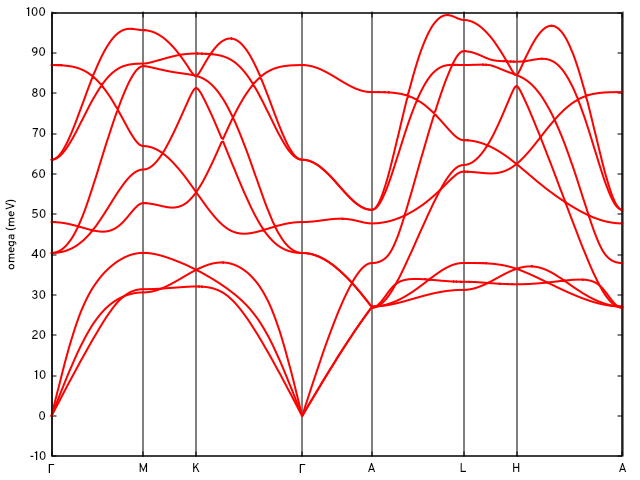

Quantum ESPRESSO
Electron-phonon interpolation with INTW
Table of contents
- Preparation of QE data
- INTW-Wannier90 interface
- Triangulation of the Fermi surface
- Electron-phonon by Method I
- Electron-phonon by Method II
In this tutorial we showcase INTW electron-phonon interpolation utilities taking hexagonal MgB2 as example and using Quantum ESPRESSO (QE) as DFT code. As part of the workflow, we also make use of the INTW-Wannier90 interface and the Fermi surface (FS) triangulation utility.
Note, the provided intw.in contains all the necessary input to perform the calculations described below until the interpolation by Method I. For Method II, the &elphon block has to be rewritten.
Preparation of QE data
Here we do pw.x and ph.x calculations with the 6.7Max version of QE. In the working directory, we find:
$ tree
.
├── B.pz-vbc.UPF
├── create_intw_q_dirs.in
├── intw.in
├── intw_wann.in
├── mgb2_a2F.png
├── mgb2_bands.png
├── mgb2_dos.png
├── mgb2_ph_bands.png
├── mgb2_ph_dos.png
├── mgb2.pw2intw.in
├── mgb2.scf.in
├── mgb2.win
├── Mg.pz-n-vbc.UPF
├── phonons_333
│ └── mgb2.ph.in
└── Tutorial.txt
With the pseudo files and the self-consistent (scf) calculation input, we run pw.x:
$ ${QE_dir}/pw.x < mgb2.scf.in > mgb2.scf.out
This electronic calculation uses a $N_k$ = 12x12x12 grid. For the phonons we set a grid $N_q$ = 3x3x3.
pw2intw.x reads the phonon data from an individual directory qq${iq}/ for each q-point index iq. Therefore, ph.x must be executed for one q-point at a time. For the ph.x input preparation and execution, a script can be used adapted to the needs of the user, or, create_intw_q_dirs.x code provided by INTW can be used. In this example create_intw_q_dirs.in is provided for this purpose:
$ cat create_intw_q_dirs.in
&inputpp
prefix = "mgb2"
phdir = "./phonons_333/"
nq1 = 3, nq2 = 3, nq3 = 3
reference_file = "mgb2.ph.in"
/
Where reference_file located inside phdir is:
$ cat phonons_333/mgb2.ph.in
phonons for MgB2
&inputph
outdir = './'
prefix = 'mgb2'
trans = .true.
ldisp = .false.
tr2_ph = 1.0d-16
fildvscf = 'dvscf'
fildyn = 'mgb2.dyn'
verbosity = 'high'
/
Note that, because ldisp is set to .false., ph.x will expect a q-point at the end of the file, which will be added by create_intw_q_dirs.x automatically. Now we run:
$ ${QE_dir}/create_intw_q_dirs.x < create_intw_q_dirs.in > create_intw_q_dirs.out
This will also create the qlist.txt file inside phdir, which contains a list of the irreducible q-points:
cat phonons_333/qlist.txt
1 0.0000000000 0.0000000000 0.0000000000
2 0.0000000000 0.0000000000 0.2918855809
3 0.0000000000 0.3849001795 0.0000000000
4 0.0000000000 0.3849001795 0.2918855809
5 0.3333333333 0.5773502692 0.0000000000
6 0.3333333333 0.5773502692 0.2918855809
Then we run the ph.x calculation for each q-point:
$ cd phonons_333/qq1
$ cp -r ../../mgb2.save .
$ ${QE_dir}/ph.x < mgb2.ph.in > mgb2.ph.out
$ rm -fr mgb2.save
cd ../..
And so on until all phonon calculations are completed. Back into the working directory and we are ready to transform the QE data into a format suitable for INTW by running pw2intw.x:
$ ${QE_dir}/pw2intw.x < mgb2.pw2intw.in > mgb2.pw2intw.out
This will create mgb2.save.intw directory, where all the data required by INTW is stored:
$ tree mgb2.save.intw
mgb2.save.intw
├── 1-KBPP.txt
├── 2-KBPP.txt
├── crystal.dat
├── gvectors.dat
├── iGlist.dat
├── irrq_patterns.dat
├── kpoints.dat
├── mgb2.dvscf_q1
...
├── mgb2.dvscf_q6
├── mgb2.dyn_q1
...
├── mgb2.dyn_q6
├── scf_rhor.dat
├── scf_vr.dat
├── wfc00001.dat
...
└── wfc00133.dat
Back to top :arrow_heading_up:
INTW-Wannier90 interface
As usual, we run Wannier90 in preprocessing mode to obtain the mgb2.nnkp file with mgb2.win as input:
$ ${W90_dir}/wannier90.x -pp mgb2
The QE calculation produced 8 bands and with the settings
$ head mgb2.win
num_bands = 8
num_wann = 5
dis_froz_max = 9.0
...
We will disentangle to work with 5 bands after unitary rotation, the lowest in the energy range. In the following intw.in input we have selected use_exclude_bands = 'wannier'. Here we indicate in the &input block the grid and the Fermi energy from mgb2.scf.out, which is needed later:
&input
outdir = './'
prefix = 'mgb2'
nk1 = 12
nk2 = 12
nk3 = 12
TR_symmetry = .false.
use_exclude_bands = 'wannier'
chemical_potential = 7.3852
/
The &intw2W block is the input for intw2W90.x, which will generate mgb2.eig, mgb2.mmn and mgb2.amn upon symmetry rotation of the wavefunctions and applying the convolution formula described in the paper.
&intw2W
intw2W_fullzone = .false.
intw2W_method = 'CONVOLUTION'
/
We can run intw2W90.x, then Wannier90 normally, and finally w902intw.x.
$ ${INTW_dir}/intw2W90.x < intw.in
$ ${W90_dir}/wannier90.x mgb2
$ ${INTW_dir}/w902intw.x < intw.in
This produces the files mgb2.u_mesh and mgb2_hr_intw.dat, containing the unitary rotations and the Hamiltonian in the real space basis, respectively. With the options in &DOS and the K_PATH card, we can interpolate the band structure and obtain a density of states at this point:
$ ${INTW_dir}/interpolate.x < intw.in
gnuplot> do for [ qpt in "0.000000E+00 0.622657E+00 0.982148E+00 0.170113E+01 0.217332E+01 0.279597E+01 0.315546E+01 0.387445E+01" ]{set arrow nohead from qpt,graph 0 to qpt,graph 1 lc "black"}
gnuplot> set xtics ("{/Symbol G}" 0.000000E+00, "M" 0.622657E+00, "K" 0.982148E+00, "{/Symbol G}" 0.170113E+01, "A" 0.217332E+01, "L" 0.279597E+01, "H" 0.315546E+01, "A" 0.387445E+01)
gnuplot> set zeroaxis
gnuplot> set ylabel 'E-E_F (eV)'
gnuplot> p 'mgb2.bnd_int' u 1:2 w l


Back to top :arrow_heading_up:
Triangulation of the Fermi surface
The triFS.x utility needs the input file blocks &tri_FS and &FS_opt. At this point, a different energy isosurface can be selected. The mgb2_hr_intw.dat file is used internally by triFS.x.
$ ${INTW_dir}/triFS.x < intw.in
Only some of the files produced by triFS.x are needed in the electron-phonon calculation later on:
$ ls
...
mgb2.${ish}_FS_tri.off
mgb2.${ish}_FS_tri_v_k.dat
mgb2.${ish}_IBZ_FS_tri.off
mgb2.${ish}_IBZ_FS_tri_v_k.dat
...
where ish=3,4,5 are band indices of the Fermi sheets identified by triFS.x. :heavy_exclamation_mark:NOTE: bands are labelled according to set_num_bands. If we had used exclude_bands earlier, the labels would count the bands in the non-excluded set. These *.off files contain the triangulated FS in the irreducible Brillouin zone wedge (IBZ) and in the full zone. The *v_k.dat files contain the Fermi velocities.
Back to top :arrow_heading_up:
Electron-phonon by Method I
The &ph input block describes the phonon grid and dynamical matrix options. In this case, we chose to read the $C(q)$ files, stored in directory `mgb2.save.intw', and to apply an acoustic sum rule:
&ph
nq1 = 3
nq2 = 3
nq3 = 3
nqirr = 6
qlist = "./phonons_333/qlist.txt"
read_for_dynmat = 'dynq'
apply_asr = .true.
/
Together with the options in &DOS_ph and the card Q_PATH in the input, we can calculate the phonon bands by doing:
$ ${INTW_dir}/interpolate_phonons.x < intw.in
and using Gnuplot with the same xtics for the q-path as in the previous band structure figure:
...
gnuplot> unset key
gnuplot> set ylabel 'omega (meV)'
gnuplot> set linestyle 1 lc rgb "red" lw 2
gnuplot> p 'mgb2.qbnd_int' u 1:2 w l ls 1, '' u 1:3 w l ls 1, '' u 1:4 w l ls 1,'' u 1:5 w l ls 1,'' u 1:6 w l ls 1,'' u 1:7 w l ls 1,'' u 1:8 w l ls 1,'' u 1:9 w l ls 1,'' u 1:10 w l ls 1
gnuplot> reset
gnuplot> set xlabel 'omega (Ry)'
gnuplot> p 'mgb2.qdos_int' w l


The ep_interp_on_trFS_dV.x utility calculates the electron-phonon matrix elements for $k+q,k$ pairs on the Fermi surface, including inter-sheet ones, by interpolation of the induced potential (see A. Eiguren and C. Ambrosch-Draxl, Phys. Rev. B 78 (2008) 045124). The interpolation method has to be explicity invoked by the flag ep_interp_method. In this example we specify that the sheets labelled 3-5 are to be used with the ep_interp_bands option and the range. The k-points will be read in from the .off files. :heavy_exclamation_mark:NOTE: we must provide the commands for running non-self-consistent (nscf) QE calculations and the name of the QE input file of the scf calculation, as INTW will use it as a template to generate the nscf calculations. Here machine options can be introduced, for example, to run pw.x in parallel.
&elphon
nscf_code = 'QE'
ep_interp_method = 'dV_interpolate'
ep_interp_bands = 'ef_crossing'
nfs_sheets_initial=3
nfs_sheets_final=5
command_pw = "${QE_dir}/pw.x"
command_pw2intw = "{QE_dir}/pw2intw.x"
file_pw = 'mgb2.scf.in'
/
Upon running
$ ${INTW_dir}/ep_interp_on_trFS_dV.x < intw.in
the matrix elements, fully resolved into spin blocks if nspin=2, are calculated and printed in file mgb2_ep_interp.dat with this format:
do js=1,nspin
do is=1,nspin
write(unit_ep,fmt="(6i6,100e16.6)") ibp, iksp, ikp, ib, iks, ik, &
(aep_mat_el(ikp,ik,js,is,iat), iat=1,3*nat)
end do
end do
where ibp and ib are sheet indices, iksp and iks are the k-point indices inside the sheet, ikp and ik are global k-point counters, and iat runs over phonon modes. Here iksp and iks are taken from the triangulation on the full zone and the IBZ.
Finally, the a2F_on_trFS.x utility reads the mgb2_ep_interp.dat, interpolates the dynamical matrix and integrates the Eliashberg function. This utility reads also the triangulation and velocity files:
$ ${INTW_dir}/a2F_on_trFS_dV.x < intw.in
The first two columns of the output file mgb2_a2F_interp.dat contain $\alpha^2F(\omega)$. The other columns are the mode-resolved quantity.
Before proceeding with interpolation Method II, we rename the output to compare results later on.
mv imgb2_ep_interp.dat mgb2_ep_interp_dV.dat
mv mgb2_a2F_interp.dat mgb2_a2F_interp_dV.dat
Back to top :arrow_heading_up:
Electron-phonon by Method II
To do the same calculation on the FS with Method II we have to calculate the electron-phonon matrix elements on the coarse grid given by $N_k$ and $N_q$. We do this with the ep_melements.x utility and updating the &elphon block of the intw.in file:
&elphon
ep_bands = 'intw'
ep_mat_file = "ep_mat.dat"
/
${INTW_dir}/ep_melements.x < intw.in
This will store the elements in files ep_mat.dat_1 to ep_mat.dat_27 for the coarse q-point grid. Now, we interpolate these elements from the coarse grid onto the triangulated Fermi surface by Wannier interpolation (see F. Giustino et al., Phys. Rev. B 76 (2007) 165108). To do this, we need the .off files and a few more lines in the &elphon block of the intw.infile:
&elphon
ep_bands = 'intw'
ep_mat_file = "ep_mat.dat"
ep_interp_method = 'wannier'
ep_interp_bands = 'ef_crossing'
nfs_sheets_initial = 3
nfs_sheets_final = 5
/
We run the Wannier interpolation and the Eliashberg function calculation:
${INTW_dir}/ep_interp_on_trFS_dV.x < intw.in
${INTW_dir}/a2F_on_trFS_dV.x < intw.in
Finally, we rename the results files:
mv imgb2_ep_interp.dat mgb2_ep_interp_wann.dat
mv mgb2_a2F_interp.dat mgb2_a2F_interp_wann.dat
and we are ready to compare the Eliashberg function from both methods:
gnuplot> set ylabel 'a2F(omega)'
gnuplot> set xlabel 'omega(Ry)'
gnuplot> p 'mgb2_a2F_interp_dV.dat' w l,'mgb2_a2F_interp_wann.dat' w l